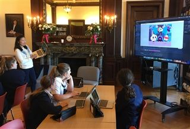

Technology is an essential tool for helping Hamlin girls become “extraordinary thinkers and innovators, courageous leaders, and women of integrity.”

Hamlin classrooms weave a variety of technological tools to support the teaching and learning cycle. We approach the use of technology with a pedagogical lens where we act with intention and use a rigorous decision making process to select the tools that we incorporate into our program. We believe that technology cultivates curiosity, independent exploration, analysis, and unique creativity, while rooting the educational experience and shaping the lives of today’s digital citizens.
Teaching ethical and social responsibility and wise decision-making are critical 21st century skills. Digital literacy and citizenship are interwoven throughout the Hamlin curriculum, highlighting our belief that living an ethical digital life complements creativity and creation. We have been recognized by Common Sense Media as a “Digital Citizenship Certified School”, and actively work with our parent community to ensure our students receive a consistent message to encompass a digital world that remains active outside of the school day.
Innovation with technology is core to the Hamlin program. We offer K-8 programming while supporting a growing robotics program, ensuring that our girls are not only savvy consumers of technology, but more importantly, are creators. As a community, we are moving beyond simply using substitution technology (i.e., digital textbooks) and are working towards redefining teaching and learning with the aid of technology (i.e., student-driven learning). Recently, Hamlin was selected as an Apple Distinguished School. Download our Multitouch Book (iBook) to learn more about our program.
Hamlin teachers are dynamic thought leaders who present regularly at regional and national conferences and focus on projects that support learning with technology.
Lastly, Hamlin has a passionate and responsive technology team that serves our girls K-8, the faculty, and the staff.
Hamlin girls code! The Hamlin School is dedicated to teaching girls programming skills starting in Kindergarten. In Lower School, students are introduced to computational thinking using iPad apps such as Kodable, Scratch Jr, and Lightbot. They later experiment with block-based programming languages like Hopscotch, Blockly, and Scratch.

In Middle School, students continue learning with block-based programming environments as they create more complicated projects in Scratch. They also use programming environments from code.org, such as Game Lab and App Lab, to create interactive apps with JavaScript. Our Grade 8 students learn to hand-code HTML and CSS to publish websites. Students continue to practice computational thinking with iPad apps such as Swift Playgrounds and Grasshopper.
Through the use of these apps, students learn the basics of coding including sequencing, conditional statements, Booleans, and loops. As they create projects using these tools, students learn about the design process as they prototype, test, and refine their animations and games. Students also gain an understanding of important mathematical concepts such as coordinates, variables, and random numbers.
